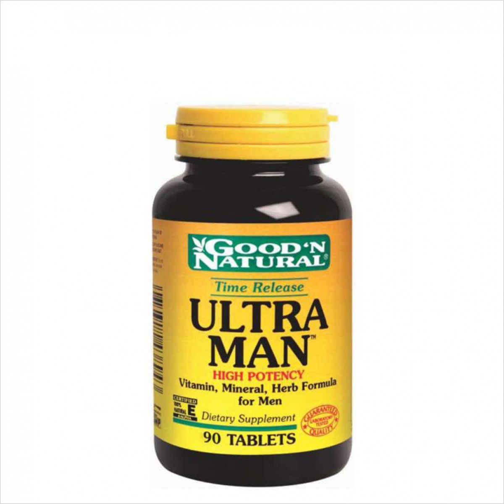

Información de Ultra Man :
Complemento de Vitaminas, Minerales y Extractos Naturales para el hombre.
Suplemento Ultra Man de alta potencia de Good'n Natural es único en usar una base de Vitaminas,
Minerales y Mezcla de extractor herbales para el hombre y un promovedor de su salud inmune,
sistema cardiovascular y salud del tracto urogenital.
Principales Componentes de Ultra Man :
Ultra Man apoya los requerimientos diarios de vitaminas y minerales de Los hombres
indispensables para el desarrollo de todos los procesos metabólicos del organismo.
Contiene una mezcla de aminoácidos de entre los que se encuentran : L-Glutamina, dos aminoácidos
que de han demostrado ser unos de los nutrientes más poderosos para estimular la síntesis de proteína
y prevenir el catabolismo. L-Carnitina que favorece la eliminación de grasas durante el ejercicio,
transformándola en energía. Ademas es un nutriente muy eficaz en la recuperación muscular. También incluye
L-Taurina, L-Cisteina, y L-Metionina.
Incluye una mezcla de MSN, Sílice, Colágeno, Glucosamina y sulfato de Condroitina, la UNA Poderosa fórmula
para promover la salud de las articulaciones.
Ultra Man de Good'n Natural contiene una mezcla bioactiva para hombres, destinada a aumentar
la Potencia sexual incrementar, los niveles de energía y contrarrestar los síntomas de la fatiga que contiene
extracto de semilla de calabaza, extracto de ostra y saw palmetto.
Ademas aporta extractos naturales de los mejores antioxidantes como el extracto de ajo, extracto de uva, saúco,
luteína o coenzima Q10 entre otros, que ayudan al organismo a protegerse contra los radicales libres, causantes
del envejecimiento y algunas enfermedades.
Ultra Man contiene una mezcla de extractos naturales como te verde, ginkgo biloba, cayena,
espirulina y ginseng para mejorar la vitalidad y la energía.
Incluye Pycnogenol, extracto de corteza de pino marítimo francés, incluye una potente mezcla de antioxidantes,
Es un anti-inflamatorio natural, estimula la generación de colágeno y 'acido hialurónico y ayuda a
la dilatación de los vasos sanguíneos mediante el apoyo a la producción de óxido nítrico.


{kind=link}
{kind=link}